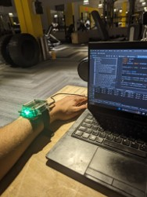
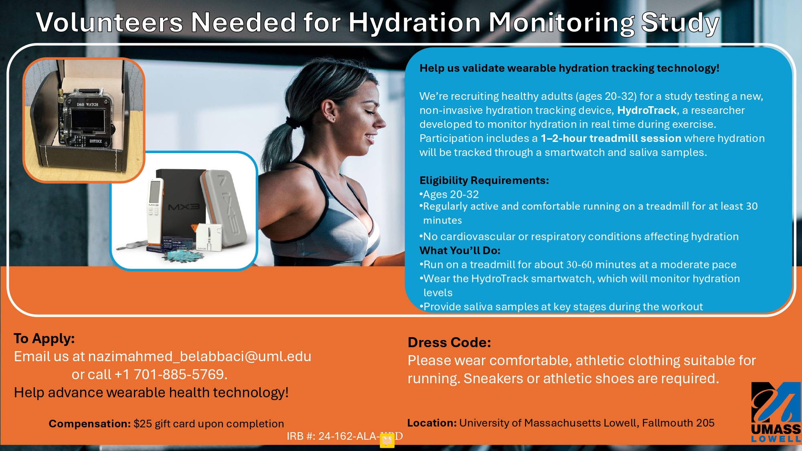

Towards wearable, non-invasive and real-time hydration tracking
Overview of the 1st prototype
HydroTrack is the first prototype I made by integrating a low-cost optical sensor into an open-source programmable watch and turning it into a hydration monitor. Built during my M.S. research at UMass Lowell, it combines spectroscopy and edge-deployed AI models to infer hydration status from wrist reflectance data.
- AI on the edge – Random Forest and XGBoost classifiers trained on spectroscopic signals, achieving up to 90% accuracy.
- Hardware – SparkFun AS7265x Triad spectroscopy sensor embedded in a DSTIKE Watch V4 (ESP32).
- Experiments – Calibration with lab-grade spectrometer (Hach DR3900), electrolyte-solution benchmarking, skin-hydration tests during fasting & exercise.
- Deployment – TinyML model runs fully on-device; LEDs indicate hydration state (green = hydrated, red = dehydrated).

Methods Summary
Hardware Integration
The AS7265x Triad sensor captures 18 wavelengths (410–940 nm).
Signals are read via I²C on an ESP32 microcontroller and processed on the watch itself.
Machine-Learning Pipeline
- Preprocessing: noise filtering + Eulerian Video Magnification to amplify subtle optical variations.
- Models: Random Forest and XGBoost for 3 hydration classes: hydrated, mid, dehydrated.
- Deployment: converted to TinyML header files and executed locally on the watch.
Experiments
- Electrolyte calibration – sodium/potassium solutions vs lab spectrometer.
- Skin hydration – pre/mid/post workout & fasting sessions with 5 participants.
What’s next > Expanded Research: Beyond the Prototype
After developing the first HydroTrack prototype, I conducted an extensive review of hydration-monitoring technologies. This helped benchmark HydroTrack against all existing methods and identify the gaps in real-world hydration sensing and what are the most promising aprroaches.
Next-gen Hydration Research Study: Call for Participants
I am currently leading an IRB-approved study at UMass Lowell to validate the next-generation HydroTrack device during treadmill exercise.
What the study involves
- 1–2 hour laboratory session
- 30–60 minutes of treadmill running at a moderate pace
- Wearing the HydroTrack smartwatch to measure hydration levels
- Providing saliva samples at pre-, mid-, and post-workout stages
Eligibility Requirements
- Healthy, physically active, comfortable running for ≥30 minutes
- No cardiovascular or respiratory conditions affecting hydration
Compensation
- $25 gift card upon completion
Contact
📧 nazimahmed_belabbaci@uml.edu

Publications
Belabbaci N.A., Alam M.A.U., HydroTrack: Spectroscopic Analysis Prototype Enabling Real-Time Hydration Monitoring in Wearables, IEEE EMBC 2024.
→ Read on IEEE XploreBelabbaci N.A., Wearable Hydration Monitoring Technologies: A Comprehensive Review of 100+ Studies, JMIR mHealth and uHealth 2025; 13:e60569.
→ Read on JMIRMaster’s Thesis – A Prototype Smartwatch Utilizing Spectroscopy for Real-Time Monitoring of Hydration Status, UMass Lowell 2024.
→ Download PDF